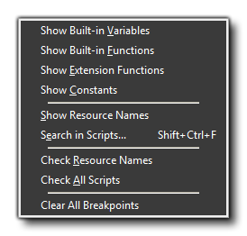
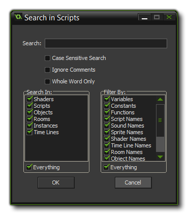

这个菜单提供了查阅内置函数，自定义脚本，变量以及常量相关的功能，此外还有检查脚本、资源名错误的功能
- 显示内置变量（Show Built-in Variables）: 查阅GMS内置的全局变量以及对象的内置变量。
- 显示内置函数（Show Built-in Functions）: 查阅 GameMaker 语言(GML) 提供给我们使用的内置函数
- 显示扩展函数（Show Extension Functions）: 查阅项目内扩展提供的函数以及常量。
- 显示常量（Show Constants）: 查阅项目内的所有常量，包括了内置的常量。
- 显示资源名（Show Resource Names）: 查阅项目内的全部资源。
- 字符串搜索（Search In Scripts）: This brings up a search form that can be used to search through various resources to find a specific string or function and it includes a number of options to make the search as narrow or as broad as necessary. This is an extremely powerful tool for changing things within a game or for debugging when there is a problem with a variable name or a function. The following window will pop up and allow you to narrow or widen the search as needed: 
- 检测资源名规范（Check Resource Names）: To check and make sure that no name conflicts exist you can choose this command. GameMaker: Studio will not allow you to name two resources with the same name, but if you merge files or import an older format project, then this may happen. If it does, you may get odd behaviours and even errors, which can be resolved by using this.
- 检测脚本语法（Check All Scripts）: This will run a check through all objects, instances and rooms that have GML in them for errors and display them in a list. You can then click on any errors that are displayed to be taken to the properties window of the relevant resource to fix it.
- 清除全部断点（Clear All Breakpoints）: Clears all the breakpoints from your project.
| Converted from CHM to HTML with chm2web Pro 2.85 (unicode) |